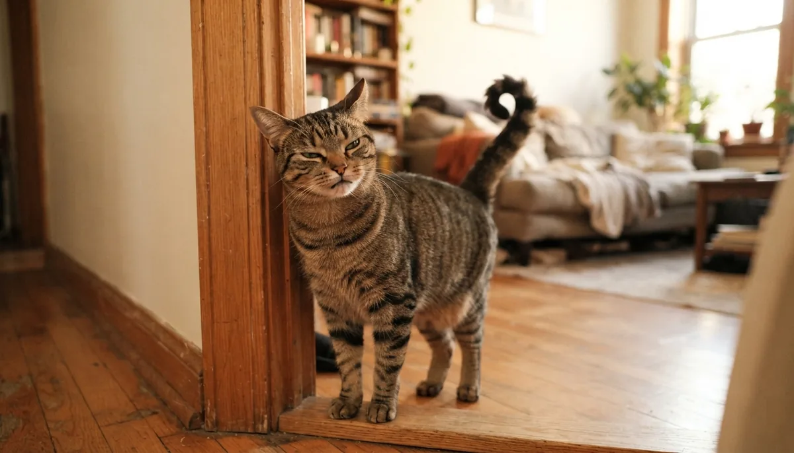

Cat Body Language & Tail Talk: What Your Cat Is Really Saying

Cats have a reputation for being mysterious, but they're actually talking constantly — with the tail, the ears, the eyes, even the whiskers. The reason they seem hard to read is that cat signals are quieter and quicker than dog signals, and a few of them mean almost the opposite of what people assume. Once you learn the vocabulary, the "moody, unpredictable cat" turns out to be remarkably consistent. Here's how to read the whole cat, drawing on guidance from the ASPCA, Cornell Feline Health Center and veterinary behaviorists.
Tail talk — the cat's mood flag
A cat's tail is the fastest, most honest read on its emotional state — and unlike a dog's tail, a moving cat tail usually signals rising tension, not happiness:
Tail up, tip curved The friendly greeting
A tail held straight up — often with a little hook or quiver at the tip — is the classic feline hello. Cats greet trusted friends this way, and a quivering upright tail when you come home is about as enthusiastic as cat greetings get. Kittens greet their mothers with the same tail-up salute.
Swishing, lashing or thumping Irritation rising
A tail flicking slowly at the tip means the cat is focused or mildly annoyed. A full lashing or thumping tail is a clear "back off" — the feline equivalent of a warning growl. If you're petting a cat and the tail starts whipping, that's your cue to stop before the swat comes.
Puffed tail (bottle-brush) Frightened, not fierce
A tail puffed to twice its size — often with an arched back and sideways stance — means the cat is startled or scared and trying to look bigger. Give the cat space and let it come down on its own; a frightened cat that's cornered may lash out.
Tail low, tucked or wrapped Worried or unwell
A tail held low or clamped down signals anxiety or submission. A cat sitting hunched with the tail wrapped tightly around the body can simply be cozy — but combined with squinted eyes, flattened ears or hiding, it can mean pain or illness. Cats hide discomfort very well, so posture changes matter.
Ears, eyes and whiskers — the fine print
Ears Forward = content
Forward and relaxed: a calm, interested cat. Swiveling: tracking sounds, on alert. Flattened sideways ("airplane ears"): irritation or anxiety building. Pinned flat back against the head: a frightened or angry cat — the strongest ear warning there is.
Eyes The slow blink is real
Soft, half-closed eyes with slow blinks: deep contentment and trust. Research published in Scientific Reports found cats are more likely to approach people who slow-blink at them — so blink slowly back; it works. Wide eyes with huge pupils: arousal — excitement, play or fear. Narrowed pupils with a hard stare: tension, possibly aggression. Constantly squinted eyes can also signal pain.
Try it tonight: catch your cat's gaze, blink slowly, look away. Many cats blink back — researchers have called it the feline smile.
Whiskers Easy to miss
Relaxed, out to the sides: a comfortable cat. Pushed far forward: intense interest or hunting mode. Pulled tight back against the face: fear or defensiveness. Whiskers move with mood far more than most owners realize.
Purring, kneading and the belly trap
Purring Usually happy — not always
Purring most often means contentment, but cats also purr when they're stressed, injured or in pain — it appears to be self-soothing. A cat purring while hunched, hiding or refusing food isn't happy; it's coping. Read the body around the purr.
Kneading ("making biscuits") Kitten comfort
Rhythmic pushing with the front paws is leftover nursing behavior — kittens knead to stimulate milk. An adult cat kneading on your lap is expressing deep comfort and contentment. It's one of the highest compliments a cat gives.
The exposed belly Trust, not an invitation
A cat rolling over and showing its belly is displaying trust — but for most cats it is not a request for a belly rub. The belly is the most vulnerable spot on a cat's body, and many cats reflexively grab and kick a hand that reaches for it. Accept the compliment; pet the head instead.
The feline stress ladder
Like dogs, cats escalate through predictable stages before a scratch or bite — and most "sudden" attacks were announced well in advance:
- Subtle Tail tip flicking, ears rotating sideways, skin twitching along the back, sudden grooming
- Clearer Tail lashing, airplane ears, dilated pupils, crouching, leaning away, low growl
- Loud Hissing, spitting, swatting with claws in warning
- Last resort Scratch or bite
Petting-induced overstimulation — the classic misread
The most common cat "bite from nowhere" happens mid-cuddle. It even has a name: petting-induced overstimulation. The warnings come in order — tail starts flicking, skin ripples, ears rotate back, the cat glances at your hand — and then the nip. The fix is simple: watch the tail and ears while petting, keep sessions short, and stop at the first flick. Many cats prefer a few short pets around the head and cheeks (where their scent glands are) over long strokes down the body.
What a truly happy, relaxed cat looks like
A content cat is loose and unbothered: tail up or resting softly, ears forward, whiskers relaxed, eyes soft with slow blinks, maybe kneading or gently head-butting you (that's "bunting" — scent-marking you as family). This is the cat you want to see at treat time too — relaxed and interested when you offer something safe like a bit of plain cooked chicken or a small taste of tuna, not swatting or hunched over the bowl.
When body language means "call the vet"
Because cats mask pain instinctively, body language is often the only early sign of illness. Contact your veterinarian if your cat suddenly hides more, sits hunched with a tucked tail and squinted eyes, stops grooming (or overgrooms one spot), purrs while withdrawn and off its food, or shows a sudden personality shift — a friendly cat turning aggressive is frequently a cat in pain. Trust posture changes over habit: cats rarely "just get grumpy" overnight.
Frequently asked questions
Does a wagging tail mean my cat is happy, like a dog?
No — mostly the opposite. A swishing or lashing cat tail usually signals irritation or rising tension. The happy cat tail is the still one held straight up, often with a curved or quivering tip, especially when greeting you.
Why does my cat show me its belly but attack when I touch it?
An exposed belly is a display of trust, not an invitation. The belly is a cat's most vulnerable area, and many cats reflexively defend it. Take it as a compliment and offer head or cheek scratches instead.
Is purring always a good sign?
Usually, but not always. Cats also purr to self-soothe when stressed, injured or ill. A purring cat that's hiding, hunched or not eating needs a vet check, not a bigger cuddle.
What does it mean when my cat slow-blinks at me?
It's trust and contentment — often called the feline smile. Research shows cats respond positively when humans slow-blink back, so return the gesture: soft gaze, slow blink, look away.
Why does my cat bite me suddenly while being petted?
That's petting-induced overstimulation, and it's rarely sudden — the tail flicked, the skin rippled and the ears turned back first. Keep petting sessions short, focus on the head and cheeks, and stop at the first tail flick.
By the CanMyPet Editorial Team · Reviewed against guidance from the ASPCA, Cornell Feline Health Center and veterinary behavior sources (including slow-blink research published in Scientific Reports) · Published July 2026.